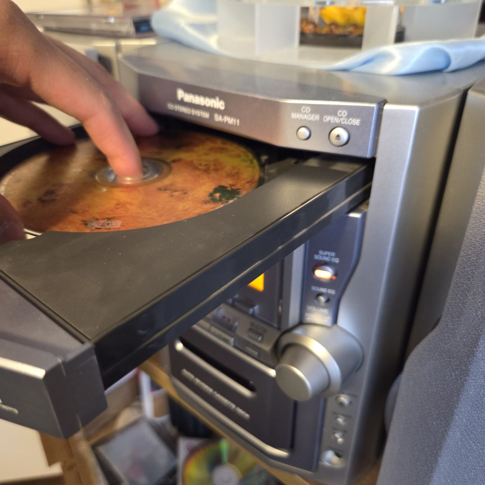

Arcade Enjoyer
Avid arcade go-er, favorite Dave and Buster's
Over 20 thousand points saved on Dave and Buster's account
Knowns many tips and tricks with various games for more points

Music Enjoyer
Is into all kinds of genres
Has a large physical inventory of music like CD's and Cassettes
Large understanding of rhythms and artists

Avid Bible Reader
Daily Bible reader, especially before sleeping and first thing in the morning
Knowns countless Bible verses by heart
Goal of reading the Bible front to back three times a year